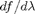

optimize_modes
Optimizes multiple eigenmodes of a structure.
Contents
Description
This function varies structural parameters in an attempt to obtain multiple eigenmodes at the target frequencies.
For an example of how to use this (somewhat involved) function, please see optimize_2D_multimode_example.
% Make this a function instead of a script to allow for nested function definitions. function [p, v] = optimize_(modes, p, dims, term_cond, max_iters, simulate, vis_progress)
The modes input parameter
The first parameter is modes which is an array of structures which have the following fields:
- tr, the real part of the target omega,
- ti, the imaginary part of the target omega,
- v_init, the initial guess at the eigenvector,
- s_prim and s_dual, the s-parameters to use with this mode,
- mu, constant permittivity for this mode,
- eig_vis, function handle for displaying progress of eigenmode solves, and
- make_structure, function handle for creating structures from a set of parameters.
Other input parameters
- p is the initial set of structural parameters,
- dims is the dimensions of the grid,
- term_cond is a function handle that determines whether the termination condition has been met,
- max_iters is the maximum number of iterations to run the optimization,
- simulate is a function handle that is used to simulate structures,
- vis_progress is a function handle for visualizing the general progress of the algorithm.
Output parameters
- p is the optimized parameter list.
- v is a cell-array of vectors representing the optimized E-field eigenmodes.
Source code
n = prod(dims);
N = length(modes);
% Helper functions.
vec = @(z) [z{1}(:); z{2}(:); z{3}(:)];
unvec = @(z) {reshape(z(1:n), dims), reshape(z(n+1:2*n), dims), reshape(z(2*n+1:3*n), dims)};
Initialize the objective function to be used.
The objective function is of the form
for every mode, where . That is to say, the objective of the minimization routine is to have every eigenmode at its target frequency.
This is accomplished by computing in order to find the direction of steepest-descent, and then stepping in that direction. To find we will need  which is
The overall objective and it's derivative is simply the sum of the objective and derivative for the individual modes.
% General forms of f(lambda), and its derivative. gen_f = @(l, tr, ti) (real(sqrt(l))-tr)^2 + (imag(sqrt(l))-ti)^2; gen_df_dl = @(l, tr, ti) ((real(sqrt(l))-tr) - 1i * (imag(sqrt(l))-ti)) * (l)^-0.5; % For each mode, obtain its objective and derivative. for k = 1 : N f{k} = @(l) gen_f(l, modes(k).tr, modes(k).ti); df_dl{k} = @(l) gen_df_dl(l, modes(k).tr, modes(k).ti); end % Function to calculate the overall objective. function [fval] = fom(lambda) for k = 1 : N fvals(k) = f{k}(lambda(k)); end fval = sum(fvals); end
Initialize function to update all eigenmodes
This function uses the simulate function that is passed as an input parameter.
% Form function handles for the individual modes. for k = 1 : N m = modes(k); ind_eigs{k} = @(p, v_guess) my_eigensolver(simulate, m.eig_vis, ... m.s_prim, m.s_dual, m.mu, m.make_structure(p), v_guess); end % Form function that will update all eigenmodes at once. function [lambda, v, w] = my_eig(p, v_guess) for k = 1 : N [lambda(k), v{k}, w{k}] = ind_eigs{k}(p, v_guess{k}); end end
Initialize optimization parameters.
% Obtain the initial eigenmodes. figure(3); [lambda, v, w] = my_eig(p, {modes.v_init}); % Compute the initial value of f(lambda). f_cur = fom(lambda); % Initial value for the step length. step_len = 1e0;
Run the eigenvalue optimization routine
for k = 1 : max_iters+1 % % Display and record the progress we have made so far. % % Print out to command-line. fprintf('%d: %1.3e ', k-1, f_cur); for l = 1 : N fprintf('(%1.3f, %1.2e) ', real(sqrt(lambda(l))), 1/imag(sqrt(lambda(l)))); end fprintf('['); for l = 1 : length(p) fprintf('%1.2f ', p(l)); end fprintf('\b]\n'); % Record. hist(k) = struct('p', p, 'f', f_cur, 'step_len', step_len); % Plot current progress. figure(1); vis_progress(p, v); % Plot optimization metrics. figure(2); subplot 121; semilogy(0:k-1, [hist(:).f], 'b.-'); ylabel('figure of merit'); subplot 122; semilogy(0:k-1, [hist(:).step_len], 'b.-'); ylabel('step length'); % Put focus on figure to be used to give status on eigenmode solve. figure(3); % % Check termination condition. % if k == max_iters+1 break end if term_cond(sqrt(lambda)) break end % % Compute the derivative df/dp. % % Calculate df/dp for every mode. for l = 1 : N df_dp(l,:) = my_eigenmode_derivative(lambda(l), v{l}, w{l}, @(p) modes(l).make_structure(p), p, df_dl{l}(lambda(l))); end df_dp = sum(df_dp, 1); % Overall value is just the sum. % % Update p. % % Take a step. delta_p = -real(df_dp'); % Steepest-descent direction, keep p real. s = step_len / max(abs(delta_p(:))); % Step distance, based on maximum parameter change. p_n = p + s * delta_p; % Obtain the next value of p. % Compute the new eigenmode. [lambda_n, v_n, w_n] = my_eig(p_n, v); f_n = fom(lambda_n); % Decide whether or not to keep p_n. if (f_n <= f_cur) % Figure-of-merit improves, keep. p = p_n; lambda = lambda_n; v = v_n; w = w_n; f_cur = f_n; step_len = 1.05 * step_len; % Small increase in step length. else % Figure-of-merit does not improve, decrease step length. step_len = step_len/2; end end % main for-loop of the optimization routine.
end
Source code for private functions
function [lambda, v, w] = my_eigensolver(sim, vis, s_prim, s_dual, mu, epsilon, v_guess) % Private function to obtain the left- and right-eigenmode of the structure. % Get ingredient matrices and vectors. [A1, A2, m, e] = maxwell_matrices(0, s_prim, s_dual, mu, epsilon, epsilon); dims = size(epsilon{1}); n = prod(dims); my_diag = @(z) spdiags(z(:), 0, numel(z), numel(z)); unvec = @(z) {reshape(z(1:n), dims), reshape(z(n+1:2*n), dims), reshape(z(2*n+1:3*n), dims)}; % Form full matrix. % Note that we actually form the matrix for F, where F = sqrt(e) E. A = my_diag(e.^-0.5) * A1 * my_diag(m.^-1) * A2 * my_diag(e.^-0.5); v_guess = sqrt(e) .* v_guess; % Convert from F-field to E-field. % Compose function handles. mult_A = @(x) A * x; function [x] = solve_A_shifted(lambda, b) % This is an F-field solver. omega = sqrt(lambda); J = unvec(-i * omega * b); x = sqrt(e) .* sim(omega, s_prim, s_dual, mu, epsilon, J); end % Find the eigenmode [lambda, v] = eigenmode_solver(mult_A, @solve_A_shifted, vis, v_guess, 10, 1e-6); % Convert v from F-field to E-field. v = v ./ sqrt(e); % Form symmetrization matrix S to obtain right-eigenmode w. [spx, spy, spz] = ndgrid(s_prim{1}, s_prim{2}, s_prim{3}); [sdx, sdy, sdz] = ndgrid(s_dual{1}, s_dual{2}, s_dual{3}); S = my_diag([sdx(:).*spy(:).*spz(:); ... spx(:).*sdy(:).*spz(:); ... spx(:).*spy(:).*sdz(:)]); % Obtain right eigenvector. w = conj(S * v); end function [df_dp] = my_eigenmode_derivative(lambda, v, w, make_structure, p, df_dl) % Compute df/dp. vec = @(z) [z{1}(:); z{2}(:); z{3}(:)]; % Helper function. % Compute the algebraic derivative. e = vec(make_structure(p)); dl_de = -(lambda / (w' * (e .* v))) * (w' .* v.'); % Compute the structural derivative. for k = 1 : length(p) dp = zeros(size(p)); dp(k) = 1; de = 1e6 * (vec(make_structure(p + 1e-6*dp)) - e); dl_dp(k) = dl_de * de; end % Compute the objective derivative. df_dp = df_dl * dl_dp; % % Check the algebraic derivative. % fun = @(e) my_eigensolver(s_prim, s_dual, mu, unvec(e), v); % alg_err = test_derivative(fun, dl_de, lambda, e, 1e-2); % % % Check the structural derivative. % fun = @(p) my_eig(p, v); % struct_err = test_derivative(fun, dl_dp, lambda, p, 1e-2); % % % Check objective derivative. % fun1 = @(p) my_eig(p, v); % fun = @(p) f(fun1(p)); % obj_err = test_derivative(fun, df_dp, f(lambda), p, 1e-2); % % fprintf('Derivative errors: %e, %e, %e\n', alg_err, struct_err, obj_err); end % % function [err] = test_derivative(fun, df_dz, f0, z0, step_len) % % Check a derivative. % % % Produce a random direction. % dz = randn(size(z0)); % dz = step_len * dz / norm(dz); % % % Evaluate delta in that direction empirically % delta_empirical = fun(z0 + dz) - f0; % delta_derivative = real(df_dz * dz); % % err = norm(delta_empirical - delta_derivative) / norm(delta_empirical); %